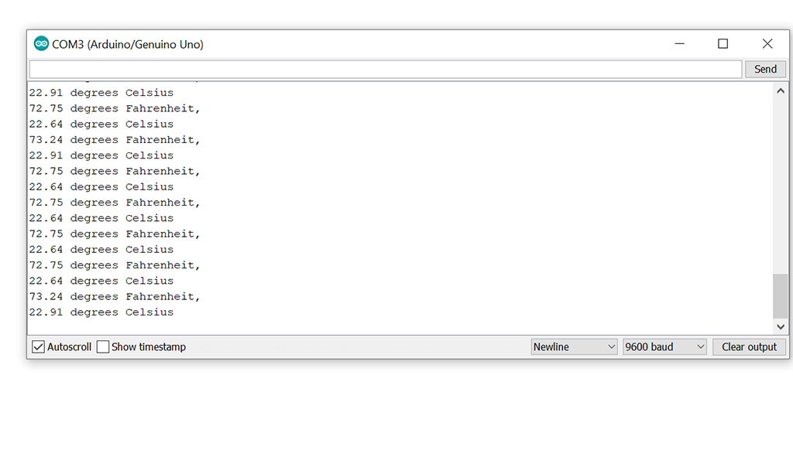

Assignment 13
The Assignment for week 13 was to design a circuit to take advantage of an input device. For my circuit I decided to use the Arduino clone I will be using in my final project. I will be using this chip homemade chip to complete the assignment. I have tested all the coding out a commercial chip to make sure the code and LM-34 senor work before attaching it to the clone. I will have to work out programing the chip to not only talk to my input sensor but also be asking it to communicate to an LCD screen on the output side. This circuit will be used for my final project as a visual to monitor the temerature inside the "oven" when baking my boards. The first step for me was to choose a temerature sensor that simply took basic measurements of the ambient air inside the box. For this input device I settled on a LM 34 Sensor. While looking around the web the LM 34 and LM 35 sensors seem to be abundant and quite cheap to source. They use 3 wires (ground, 5v and A0) and are easily attached to circuit boards and even easier to program. The only difference between the two is that the 34 reads out in Farenheit while the 35 reads out in Centigrade. Seeing as we are in the US I opted for the Farenheit model and ordered it. Here is the data sheet for it. While looking around the web the LM 34 and LM 35 sensors seem to be abundant and quite cheap to source. They use 3 wires (ground, 5v and A0) and are easily attached to circuit boards and even easier to program. The only difference between the two is that the 34 reads out in Farenheit while the 35 reads out in Centigrade. Seeing as we are in the US I opted for the Farenheit model and ordered it. Here is the pin out sheet for it.
Once I received my sensor I connected longer leads to the three connections using solder and then used shrink tubing on the entire lead as I wanted to keep the sensor neat as while it is inside the compartment of the hot box. Pin 1 is the 5v connection, Pin 2 is the output to the A0 pin on the arduino clone and Pin 3 is the ground. All in all the temp sensor is fairly easy to build.
After constructing the sensor and lead wires I was fortunate to find some information on the internet showing me how to both connect the sensor first to Arduino and how to start looking at the code in order to make it work. Eventually once I made sure the code worked I uploaded the sketch to my clone for the final assembly. In the picture below you will see the finished sensor and the pinout sheet for connecting it to arduino. screen.
Once I had the sensor connected I started to work on the code for the chip to read the LM34 and turn the analog signal into a temperature. To do this you need to convert known voltage into a corresponding temperature value. The coding looks like this in the Arduino IDE. Below you can see the sensor working in the serial monitor. I have it written to check both Fahrenheit and Celsius but in the end product it will only "print" the Fahrenheit to the LCD.
 Temp Sensor CodeI wanted to see if I could use some prior coding knowledge so I tried to see if I could manipulate the reporting of the sensor to the Nano. I set it to take the temp reading once every half second instead once a second by changing the delay from 1000 to 500 milliseconds,
Temp Sensor Code EditedThe next step is to work on connecting an LCD screen to the clone/sensor so that I can have an easy to read display of what is going on in the compartment of the hot box. Later I will also explore the possiblity of a wireless transmitter so that I can monitor the system from a remote location in my house

This is StoneWork, a free, fully standards-compliant CSS template designed by TEMPLATED. The photos in this template are from Fotogrph. This free template is released under the Creative Commons Attribution license, so you're pretty much free to do whatever you want with it (even use it commercially) provided you give us credit for it. Have fun :)